Ya forman parte
Instituciones Participantes
Organizaciones que ya se han inscrito en Snapshot Perú 2026
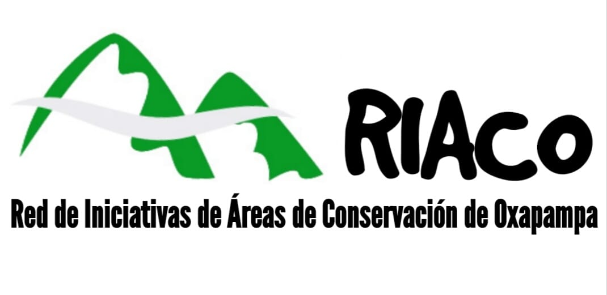
RIACO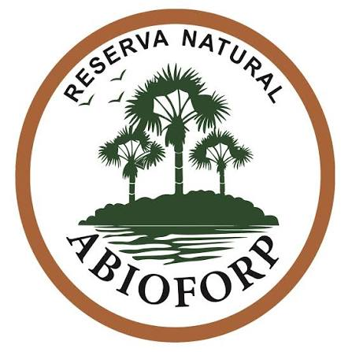
Asociación Agro-Bio Forestal El Porvenir-Pelejo (ABIOFORP)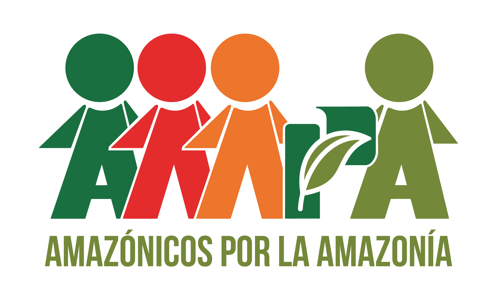
Asociación Amazónicos por la Amazonía (AMPA)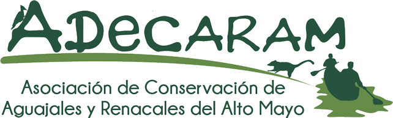
Asociación de Conservación de Aguajales y Renacales del Alto Mayo Asociación de Conservación Las Hurmanas de San Juan del Abiseo (ASHUSJA)
Asociación de Conservación Las Hurmanas de San Juan del Abiseo (ASHUSJA)
 Asociación MONTUBIA
Asociación MONTUBIA
Asociación para la Conservación de la Biodiversidad Pro Carnívoros
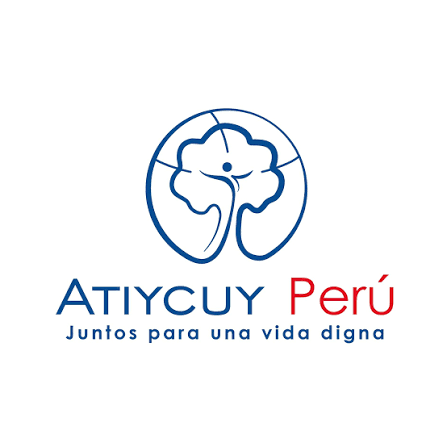
Atiycuy Perú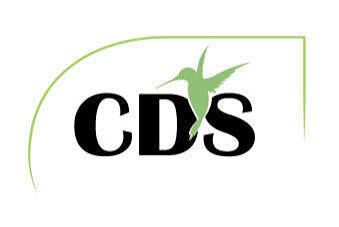
CDS EIRL (Los Nogales)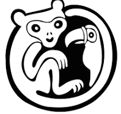
CEARE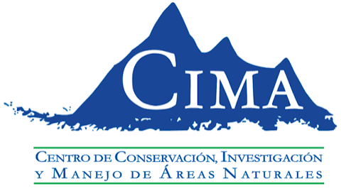
Centro de Conservación, Investigación y Manejo de Áreas Naturales (CIMA)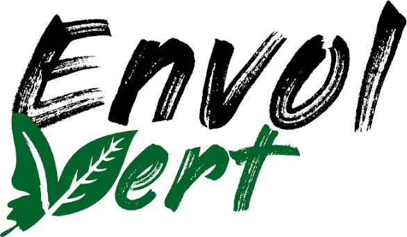
ENVOL VERT ONG
Gobierno Regional de Cajamarca
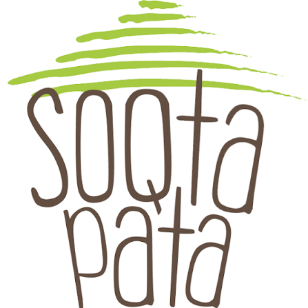
Soqtapata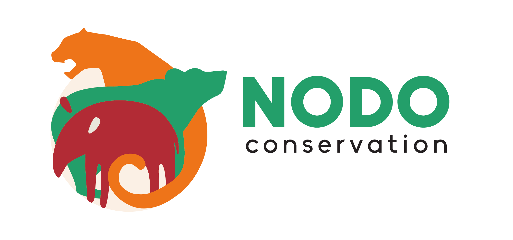
NODO CONSERVATION
Ulcumano Ecolodge
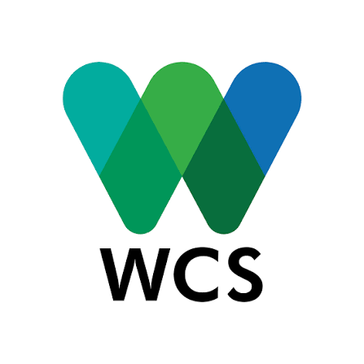
WCS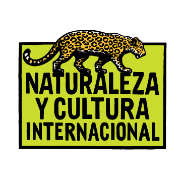
Naturaleza y Cultura Internacional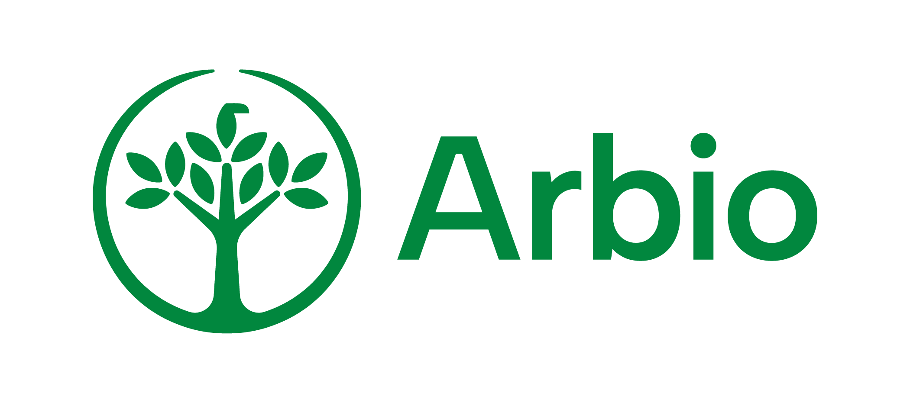
Arbio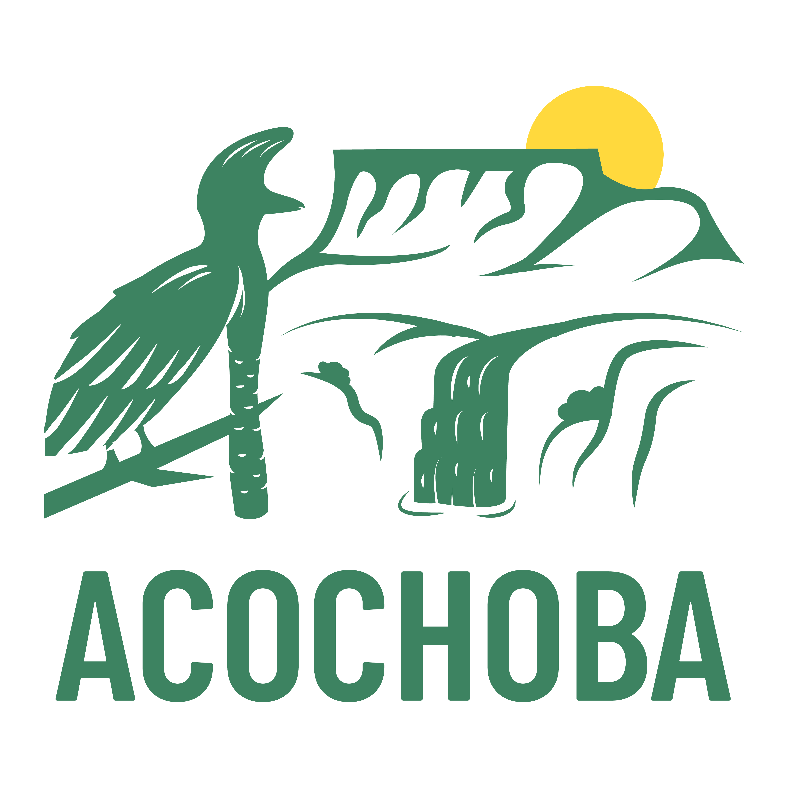
ACOCHOBA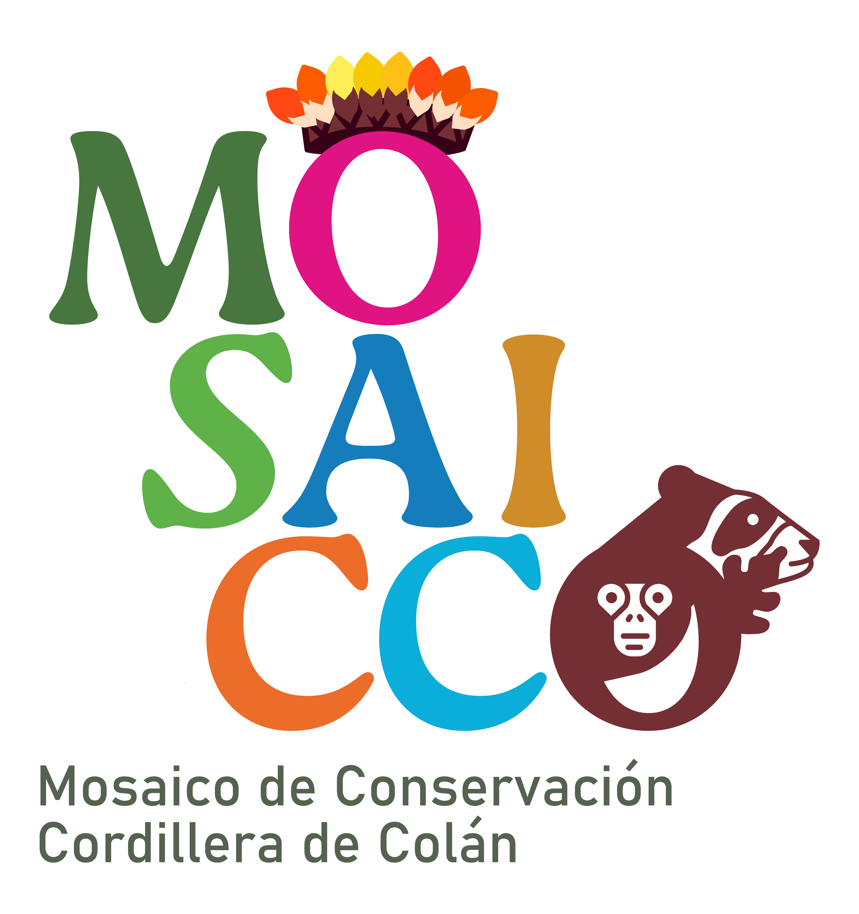
Mosaico de Conservación Cordillera de Colán Santuario Nacional Cordillera de Colán
Santuario Nacional Cordillera de Colán